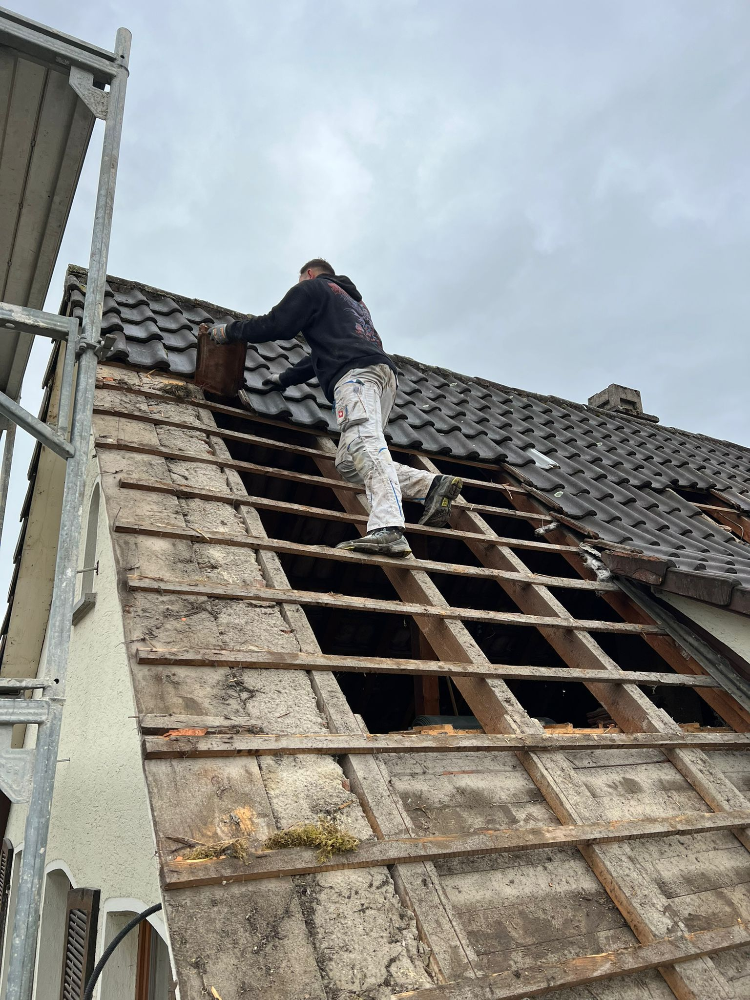

Wir sanieren Altbauten in Stockach und der Bodenseeregion – von der Dachdämmung bis zur Komplettsanierung. Sauber ausgeführt, termingerecht, ein Ansprechpartner vom ersten Gespräch bis zur Übergabe.
Rustemaj Dienstleistungen ist Ihr regionaler Ansprechpartner für energetische Sanierung in Stockach, Singen, Radolfzell, Überlingen und Konstanz. Als inhabergeführter Fachbetrieb übernehmen wir alle Gewerke aus einer Hand – von der Planung über die Ausführung bis zur sauberen Übergabe mit vollständiger Dokumentation.
Energetisch sanieren lohnt sich: Weniger Heizkosten, höherer Wohnkomfort, höherer Immobilienwert. Wir bauen fachgerecht nach GEG-Standards und übergeben Ihnen alle Unterlagen und Nachweise nach Abschluss der Arbeiten.
Fassaden-, Dach- und Kellerdämmung nach aktuellen GEG-Standards. Wir arbeiten mit zertifizierten Dämmsystemen und dokumentieren alle Arbeiten lückenlos.
Komplette Dachsanierungen: Dachstuhl, Aufsparrendämmung, Zwischensparrendämmung, Unterspannbahn, Eindeckung. Vom Reparaturauftrag bis zum Vollausbau.
Einbau und Austausch von Kunststoff-, Holz- und Aluminiumfenstern sowie Außentüren. Dreifachverglasung, energieeffiziente U-Werte, inkl. fachgerechter Laibungsabdichtung.
Sie brauchen ein Gewerk, einen Termin, einen Ansprechpartner. Wir koordinieren alle Sanierungsarbeiten, erstellen den Zeitplan und übergeben Ihnen nach Abschluss alle Unterlagen.

Steigende Energiekosten machen sich bei schlecht gedämmten Gebäuden Jahr für Jahr bemerkbar. Eine Sanierung senkt die Heizkosten dauerhaft, erhöht den Wohnkomfort und steigert den Wert Ihrer Immobilie.
Wir arbeiten schnell, sauber und mit klarem Festpreis. Sie erhalten nach Abschluss alle Unterlagen und Nachweise – vollständig und übersichtlich.
Wir kommen zu Ihnen, schauen uns das Gebäude an und besprechen Ihre Ziele – kostenlos und unverbindlich.
Sie erhalten ein schriftliches Festpreisangebot mit allen Positionen – innerhalb von 48 Stunden, ohne versteckte Kosten.
Wir stimmen den Starttermin auf Sie ab und erstellen einen verbindlichen Zeitplan – damit Sie planen können.
Unser Team arbeitet termingerecht und hält Sie wöchentlich auf dem Laufenden. Ein Ansprechpartner, kein Weiterverbinden.
Nach Abschluss erhalten Sie alle Unterlagen und Nachweise vollständig und übersichtlich – fertig für Ihre Unterlagen.
Die Kosten hängen vom Umfang ab. Eine Dachdämmung beginnt ab ca. 80–150 €/m², eine Fassadendämmung ab 100–200 €/m². Wir erstellen Ihnen nach einer kostenlosen Besichtigung ein verbindliches Festpreisangebot – ohne versteckte Kosten.
In der Regel ja – wir planen die Abläufe so, dass der Eingriff in den Alltag minimal ist. Wo ein Abschnitt nicht bewohnbar ist, sagen wir es Ihnen klar vorab und stimmen den Zeitplan entsprechend ab.
Einzelmaßnahmen wie Dachdämmung oder Fensteraustausch dauern 3–10 Arbeitstage. Eine Komplettsanierung kann je nach Umfang 4–10 Wochen in Anspruch nehmen. Nach der Besichtigung nennen wir Ihnen einen konkreten Zeitplan.
Ja – wir planen die Arbeiten so, dass Sie in der Regel in Ihrem Haus wohnen bleiben können. Wo das nicht möglich ist, sagen wir es Ihnen klar im Voraus.
Ja, wir sind in der gesamten Bodenseeregion tätig: Stockach, Singen, Radolfzell, Überlingen, Konstanz und Engen. Rufen Sie uns an oder schreiben Sie uns über WhatsApp.
Kostenloses Erstgespräch, unverbindliches Angebot. Wir melden uns innerhalb von 24 Stunden – meist noch am selben Tag.